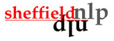

Which paper to cite if I used GATE/ANNIE:
H. Cunningham, D. Maynard, K. Bontcheva, V. Tablan. GATE: A Framework and Graphical Development Environment for Robust NLP Tools and Applications. Proceedings of the 40th Anniversary Meeting of the Association for Computational Linguistics (ACL'02). Philadelphia, July 2002. PDF. BibTex entry.
Which paper to cite if I used the ontology features in GATE:
K. Bontcheva, V. Tablan, D. Maynard, H. Cunningham. Evolving GATE to Meet New Challenges in Language Engineering. Natural Language Engineering. 10 (3/4), pp. 349-373. 2004. Pre-print. BibTex entry.
Which paper to cite on GATE and multimedia:
M. Dowman, V. Tablan, H. Cunningham and B. Popov. Web-Assisted Annotation, Semantic Indexing and Search of Television and Radio News. 14th International World Wide Web Conference. Chiba, Japan, 2005. PDF BibTex entry
Which paper to cite if I used the machine learning facilities in GATE:
Y. Li, K. Bontcheva and H. Cunningham. Adapting SVM for Data Sparseness and Imbalance: A Case Study on Information Extraction. Natural Language Engineering, 15(02), 241-271, 2009. On-line Link
Journals and Conference papers
F.Amardeilh and D.Damljanovic: Du texte à la connaissance : annotation sémantique et peuplement d'ontologie appliqués à des artefacts logiciels, Conference Ingénierie des Connaissances 2009, 25-29 May, 2009. (in French).
K. Bontcheva, B. Davis, A. Funk, Y. Li and T. Wang. Human Language Technologies. Semantic Knowledge Management, John Davies, Marko Grobelnik, and Dunja Mladenic (Eds.), Springer, 37-49, 2009. On-line Link
D.Damljanovic, F.Amardeilh, K.Bontcheva: CA Manager Framework: Creating Customised Workflows for Ontology Population and Semantic Annotation. In Proceedings of The Fifth International Conference on Knowledge Capture (KCAP'09), California, USA, September 1-4, 2009.
D.Damljanovic, K.Bontcheva: Towards Enhanced Usability of Natural Language Interfaces to Knowledge Bases. In Devedzic V. and Gasevic D. (Eds.), Special issue on Semantic Web and Web 2.0, Annals of Information systems, Springer-Verlag, 2009.
D.Damljanovic, M.Agatonovic, H.Cunningham: Usability of Natural Language Interfaces for querying ontologies presented at Workshop on Controlled Natural Language (CNL 2009) , Marettimo Island, Italy, June 08-10, 2009.
M. Laclavik and D. Maynard. Motivating intelligent email in business: an investigation into current trends for email processing and communication research. Proceedings of Workshop on Emails in e-Commerce and Enterprise Context, 11th IEEE Conference on Commerce and Enterprise Computing, Vienna, Austria, 2009. PDF
Y. Li, K. Bontcheva and H. Cunningham. Adapting SVM for Data Sparseness and Imbalance: A Case Study on Information Extraction. Natural Language Engineering, 15(02), 241-271, 2009. On-line Link
D. Maynard and A. Funk and W. Peters. Using Lexico-Syntactic Ontology Design Patterns for ontology creation and population. In Proceedings of ISWC Workshop on Ontology Patterns (WOP 2009), Washington, 2009. PDF
D. Maynard and A. Funk and W. Peters. NLP-based support for ontology lifecycle development. Proceedings of ISWC Workshop on Collaborative Construction, Management and Linking of Ontologies (CK 2009), Washington, 2009. PDF
D. Maynard and A. Funk and W. Peters. SPRAT: a tool for automatic semantic pattern-based ontology population. Proceedings of the International Conference for Digital Libraries and the Semantic Web, Trento, Italy, 2009. PDF
M. Agatonovic, N. Aswani, K. Bontcheva, H. Cunningham, T. Heitz, Y. Li, I. Roberts and V. Tablan. Large-scale, Parallel Automatic Patent Annotation. In Proceedings of 1st International CIKM Workshop on Patent Information Retrieval - PaIR'08, Napa Valley, California, USA, 30 October, 2008. PDF
D.Damljanovic, V.Tablan, K.Bontcheva: A text-based query interface to owl ontologies. In: 6th Language Resources and Evaluation Conference (LREC), Mar- rakech, Morocco, ELRA (May 2008). PDF
Damljanovic, D.,Bontcheva, K.. Enhanced Semantic Access to Software Artefacts. In Workshop on Semantic Web Enabled Software Engineering (SWESE) held in conjunction with ISWC'08, Karlsruhe, Germany, October 2008. PDF
E. Della Valle, D. Cerizza, I. Celino, A. Turati, H. Lausen, N. Steinmetz, M. Erdmann and A. Funk. Service-Finder: realizing Web Service Discovery at Web Scale. In Proceedings of European Semantic Technology Conference (ESTC 2008), Vienna, Austria, September, 2008. Video
Y. Li and K. Bontcheva . Adapting Support Vector Machines for F-term-based Classification of Patents. ACM Transactions on Asian Language Information Processing, 7(2), 7:1--7:19, 2008. Link
Y. Li and H. Cunningham. Geometric and Quantum Methods for Information Retrieval. SIGIR Forum, 42(2), 22-32, 2008. Link
D. Maynard. Benchmarking Textual Annotation Tools for the Semantic Web. In Proc. of 6th International Conference on Language Resources and Evaluation (LREC), Marrakech, Morocco, 2008. PDF
D. Maynard, Y. Li and W. Peters. NLP Techniques for Term Extraction and Ontology Population. Bridging the Gap between Text and Knowledge - Selected Contributions to Ontology Learning and Population from Text, P. Buitelaar and P. Cimiano (editors). IOS Press, 2007. Link
D. Maynard, W. Peters and Y. Li. Evaluating Evaluation Metrics for Ontology-Based Applications: Infinite Reflection. In Proc. of 6th International Conference on Language Resources and Evaluation (LREC), Marrakech, Morocco, 2008. PDF
H. Saggion, A. Funk, D. Maynard, K. Bontcheva. Ontology-based Information Extraction for Business Applications. In Proceedings of the 6th International Semantic Web Conference (ISWC 2007), Busan, Korea, November, 2007. PDF
V. Tablan, D. Damljanovic, and K. Bontcheva. A natural language query interface to structured information. In Proceedings of the 5h European Semantic Web Conference (ESWC 2008), Tenerife, Spain, June, 2008. PDF
A. Funk, V. Tablan, K. Bontcheva, H. Cunningham, B. Davis, S. Handschuh. CLOnE: Controlled Language for Ontology Editing. In Proceedings of the International Semantic Web Conference (ISWC 2007), Busan, Korea, November, 2007. PDF
A. Funk, D. Maynard, H. Saggion and K. Bontcheva. Ontological Integration of Information Extracted from Multiple Sources. In the Multi-source Multilingual Information Extraction and Summarization (MMIES) workshop at Recent Advances in Natural Language Processing (RANLP07), Borovets, Bulgaria, September, 2007. PDF
Y. Li, K. Bontcheva and H. Cunningham. Hierarchical, Perceptron-like Learning for Ontology Based Information Extraction. Proceedings of the 16th International World Wide Web Conference (WWW2007), pp. 777-786. May, 2007. PDF
Y. Li, K. Bontcheva and H. Cunningham. Cost Sensitive Evaluation Measures for F-term Patent Classification. Proceedings of the First International Workshop on Evaluating Information Access (EVIA 2007), pp. pp. 44-53. May, 2007. PDF
Y. Li, K. Bontcheva and H. Cunningham. SVM Based Learning System for F-term Patent Classification. Proceedings of the Sixth NTCIR Workshop Meeting on Evaluation of Information Access Technologies: Information Retrieval, Question Answering and Cross-Lingual Information Access, pp. 396-402. May, 2007. PDF
Y. Li, K. Bontcheva and H. Cunningham. Experiments of Opinion Analysis on the Corpora MPQA and NTCIR-6. Proceedings of the Sixth NTCIR Workshop Meeting on Evaluation of Information Access Technologies: Information Retrieval, Question Answering and Cross-Lingual Information Access, pp. 323-329. May, 2007. PDF
Y. Li and J. Shawe-Taylor. Advanced Learning Algorithms for Cross-language Patent Retrieval and Classification. Information Processing and Management, 43(5), pp. 1183-1199. 2007. Link
D. Maynard, H. Saggion, M. Yankova, K. Bontcheva and W. Peters. Natural Language Technology for Information Integration in Business Intelligence. 10th International Conference on Business Information Systems, Poland, 25-27 April, 2007. PDF
D. Maynard, W. Peters, M. d'Aquin and M. Sabou. Change Management for Metadata Evolution. In Proceedings of ESWC International Workshop on Ontology Dynamics (IWOD), Innsbruck, Austria, June, 2007. PDF
H.Saggion, SHEF: Semantic Tagging and Summarization Techniques Applied to Cross-document Coreference. In Proceedings of Semeval 2007, Association for Computational Linguistics, June, 2007. PDF
N.Aswani, K.Bontcheva and H.Cunningham: Mining Information for Instance Unification. In the proceedings of 5th International Semantic Web conference, Athens, GA, USA, November, 2006. PDF
K. Bontcheva, M. Sabou. Learning Ontologies from Software Artifacts: Exploring and Combining Multiple Sources. In proceedings of Workshop on Semantic Web Enabled Software Engineering (SWESE), November, 2006. PDF
K. Bontcheva, J. Davies, A. Duke, T. Glover, N. Kings, I. Thurlow. Semantic Information Access. In Semantic Web Technologies: Trends and Research in Ontology-based Systems. J. Davies, R. Studer, P. Warren (eds). John Wiley, 2006. Link
K.Bontcheva, H.Cunningham, A.Kiryakov and V.Tablan. Semantic Annotation and Human Language Technology. Semantic Web Technology: Trends and Research. John Wiley and Sons Ltd. 2006. Abstract Link
B. Davis, Siegfried Handschuh, H. Cunningham and V. Tablan, Further use of Controlled Natural Language for Semantic Annotation of Wikis. In the proceedings of the 1st Semantic Authoring and Annotation Workshop at ISWC2006, Athens, GA, USA, November, 2006. PDF
Y. Li, J. Shawe-Taylor. Using KCCA for Japanese-English Cross-language Information Retrieval and Document Classification. Journal of Intelligent Information Systems, 27(2), 117-133. 2006. Link
D. Maynard, W. Peters, Y. Li. Metrics for Evaluation of Ontology-based Information Extraction. In Proc of WWW 2006 Workshop on "Evaluation of Ontologies for the Web" (EON 2006), Edinburgh, Scotland, 2006. PDF
V.Tablan, T.Polajnar, H.Cunningham,K.Bontcheva. User-friendly ontology authoring using a controlled language. Proceedings of the 5th International Conference on Language Resources and Evaluation (LREC), Genoa, Italy, May, 2006. PDF
T. Wang, Y. Li, K. Bontcheva, H. Cunningham, J. Wang. Automatic Extraction of Hierarchical Relations from Text. Proceedings of the Third European Semantic Web Conference (ESWC 2006), Lecture Notes in Computer Science 4011, Springer, 2006. PDF
N. Aswani, V. Tablan, K. Bontcheva and H. Cunningham. Indexing and Querying Linguistic Metadata and Document Content. Proceedings of Fifth International Conference on Recent Advances in Natural Language Processing (RANLP-2005), 2005. PDF
K. Bontcheva. Generating Tailored Textual Summaries from Ontologies. Second European Semantic Web Conference (ESWC'05), Crete, 2005. PDF
G. Crane, K. Bontcheva, J. A. Rydberg-Cox, C. E. Wulfman. Emerging language technologies and the rediscovery of the past: a research agenda. International Journal on Digital Libraries 5(4): 309-316. 2005. Link
H. Cunningham. Information Extraction, Automatic. Encyclopedia of Language and Linguistics, 2nd Edition, Elsevier. 2005. preprint PDF
H. Cunningham, K. Bontcheva. Computational Language Systems, Architectures. Encyclopedia of Language and Linguistics, 2nd Edition, Elsevier. 2005. preprint PDF
H. Cunningham, K. Bontcheva, Y. Li. Knowledge Management and Human Language: Crossing the Chasm. Journal of Knowledge Management, Vol. 9, No. 5. pp. 108--131. 2005. Abstract
J. Davies, A. Duke, N. Kings, D. Mladenic, K. Bontcheva, M. Grcar, R. Benjamins, J. Contreras, M. B. Civico, T. Glover. Next Generation Knowledge Access. Journal of Knowledge Management, Vol. 9, No. 5. pp. 64--84. 2005. Abstract
M. Dowman, V. Tablan, H. Cunningham and B. Popov. Web-Assisted Annotation, Semantic Indexing and Search of Television and Radio News. 14th International World Wide Web Conference. Chiba, Japan, 2005. PDF
M. Dowman, V. Tablan, H. Cunningham and B. Popov. Content Augmentation for Mixed-Mode News Broadcasts. 3rd European Conference on Interactive Television: User Centred ITV Systems, Programmes and Applications. Aalborg University, Denmark, 2005. PDF.
M. Dowman, V. Tablan, H. Cunningham, C. Ursu and B. Popov. Semantically Enhanced Television News through Web and Video Integration. Second European Semantic Web Conference (ESWC'05), Crete, 2005. PDF
Y. Li and C. Miao and K. Bontcheva and H. Cunningham. Perceptron Learning for Chinese Word Segmentation. Proceedings of Fourth SIGHAN Workshop on Chinese Language processing (Sighan-05), pp. 154-157. 2005. PDF
Y. Li, K. Bontcheva, and H. Cunningham. Using Uneven Margins SVM and Perceptron for Information Extraction. Proceedings of Ninth Conference on Computational Natural Language Learning (CoNLL-2005), pp. 72-79. 2005. PDF
Y. Li, K. Bontcheva, and H. Cunningham. SVM Based Learning System For Information Extraction. J. Winkler, M. Niranjan and N. Lawerence (Eds.): Deterministic and Statistical Methods in Machine Learning, LNAI 3635, Springer Verlag, pp. 319-339. 2005. PDF
D. Maynard. Benchmarking ontology-based annotation tools for the Semantic Web. UK e-Science Programme All Hands Meeting (AHM2005) Workshop "Text Mining, e-Research and Grid-enabled Language Technology", Nottingham, UK, 2005. PDF
D. Maynard, M. Yankova, A. Kourakis and A. Kokossis. Ontology-based information extraction for market monitoring and technology watch, ESWC Workshop "End User Aspects of the Semantic Web", Heraklion, Crete, 2005. PDF
C. Ursu, V. Tablan and H. Cunningham. Semantic Analysis for Tomorrow�s Audio-Visual Digital Archives. Proceedings of 2nd European Workshop on the Integration of Knowledge, Semantic and Digital Media Technologies (EWIMT-2005), London, UK, 2005. PDF
K. Bontcheva. Open-source Tools for Creation, Maintenance, and Storage of Lexical Resources for Language Generation from Ontologies. Fourth International Conference on Language Resources and Evaluation (LREC'2004). Lisbon, Portugal. 2004. PDFK.
Bontcheva, V. Tablan, D. Maynard, H. Cunningham. Evolving GATE to Meet New Challenges in Language Engineering. Natural Language Engineering. 10 (3/4), pp. 349-373. 2004. PDF
K. Bontcheva, Y. Wilks. Automatic Report Generation from Ontologies: the MIAKT approach. Nineth International Conference on Applications of Natural Language to Information Systems (NLDB'2004). Manchester, UK. 2004. PDF.
H. Cunningham, D. Scott. Journal of Natural Language Engineering. Introduction to the Special Issue on Software Architecture for Language Engineering. 2004. PDF
A. Dalli, V. Tablan, K. Bontcheva, Y. Wilks, D. Broeder, H. Brugman, P. Wittenburg. Web Services Architecture for Language Resources. Fourth International Conference on Language Resources and Evaluation (LREC'2004). Lisbon, Portugal. 2004.PS
M. Dimitrov, K. Bontcheva, H. Cunningham, D. Maynard, A Light-weight Approach to Coreference Resolution for Named Entities, In Anaphora Processing: Linguistic, Cognitive and Computational Modelling, Antonio Branco, Tony McEnery and Ruslan Mitkov (editors), 2004. Link
Y. Li and K. Bontcheva and H. Cunningham. An SVM Based Learning Algorithm for Information Extraction. Machine Learning Workshop. Sheffield, UK. 2004. PDF
D. Maynard, K. Bontcheva, H. Cunningham. Automatic Language-Independent Induction of Gazetteer Lists. Fourth International Conference on Language Resources and Evaluation (LREC'2004). Lisbon, Portugal. 2004. PS
D. Maynard, M. Yankova, N. Aswani, H. Cunningham. Automatic Creation and Monitoring of Semantic Metadata in a Dynamic Knowledge Portal. Proceedings of the 11th International Conference on Artificial Intelligence: Methodology, Systems, Applications (AIMSA 2004), Varna, Bulgaria, 2004. PDF
M.M. Wood, S.J. Lydon, V. Tablan, D. Maynard, H. Cunningham. Populating a Database from Parallel Texts using Ontology-based Information Extraction. NLDB 2004, 2004. PDF
K. Bontcheva, H. Cunningham. The Semantic Web: A New Opportunity and Challenge for Human Language Technology. Workshop on Human Language Technology for the Semantic Web and Web Services. Held in conjunction with the Second International Semantic Web Conference (ISWC'03). H. Cunningham, Y. Ding, A. Kiryakov (eds). Florida, USA. October 2003. PDF
K. Bontcheva, A. Kiryakov, H. Cunningham, B. Popov. M. Dimitrov. Semantic Web Enabled, Open Source Language Technology. Language Technology and the Semantic Web, Workshop on NLP and XML (NLPXML-2003), held in conjunction with EACL 2003, Budapest, 2003. PDF
K. Bontcheva, D.Maynard, V. Tablan, and H. Cunningham. GATE: A Unicode-based Infrastructure Supporting Multilingual Information Extraction. Workshop on Information Extraction for Slavonic and other Central and Eastern European Languages. Held in conjunction with the 4th International Conference "Recent Advances in Natural Language Processing" (RANLP'2003), Bulgaria, 2003. PDF
H. Cunningham, V. Tablan, K. Bontcheva, M. Dimitrov. Language engineering tools for collaborative corpus annotation. Proceedings of Corpus Linguistics 2003, Lancaster, UK, 2003. DOC
D.Maynard. Multi-Source and Multilingual Information Extraction. Expert Update, 2003. PDF
D.Maynard, K. Bontcheva and H. Cunningham. Towards a semantic extraction of named entities. Recent Advances in Natural Language Processing, Bulgaria, 2003. PDF
D. Maynard, H. Cunningham. Multilingual adaptations of a reusable information extraction tool. EACL 2003, Budapest, 2003. PDF
D. Maynard, V. Tablan, K. Bontcheva, H. Cunningham. Rapid customisation of an Information Extraction system for surprise languages. ACM Transactions on Asian Language Information Processing, Special issue on Rapid Development of Language Capabilities: The Surprise Languages. 2003. Link
D.Maynard, V. Tablan and H. Cunningham. NE recognition without training data on a language you don't speak. ACL Workshop on Multilingual and Mixed-language Named Entity Recognition: Combining Statistical and Symbolic Models, Sapporo, Japan, 2003. PDF
D. Manov and A. Kiryakov and B. Popov and K. Bontcheva and D. Maynard, H. Cunningham. Experiments with geographic knowledge for information extraction. Workshop on Analysis of Geographic References, HLT/NAACL'03, Edmonton, Canada, 2003. PDF
H. Saggion, K. Bontcheva, H. Cunningham. Robust Generic and Query-based Summarisation. Proceedings of the European Chapter of Computational Linguistics (EACL), Research Notes and Demos, 2003. Link
H. Saggion, H. Cunningham, K. Bontcheva, D. Maynard, O. Hamza, Y. Wilks. Multimedia Indexing through Multi-source and Multi-language Information Extraction: The MUMIS Project. Data & Knowledge Engineering Journal, Volume 48, pp. 247-264, 2003. Link
H. Saggion, J. Kuper, T. Declerck, D. Reidsma, H. Cunningham. Intelligent Multimedia Indexing and Retrieval through Multi-source Information Extraction and Merging. IJCAI 2003, Acapulco, Mexico, 9-15 August 2003. PDF
V. Tablan, K. Bontcheva, D. Maynard, H. Cunningham. OLLIE: On-Line Learning for Information Extraction. HLT-NAACL 2003 Workshop: Software Engineering and Architecture of Language Technology Systems (SEALTS). Edmonton, Canada, 2003. PDF
I.Witten, K.Don, M.Dewsnip, V.Tablan. Text mining in a digital library. Journal of Digital Libraries special issue "Digital Libraries as experienced by the editors of the Journal" 2003. PDF
M. M. Wood and S. J. Lydon and V. Tablan and D. Maynard and H. Cunningham. Using parallel texts to improve recall in IE. Recent Advances in Natural Language Processing, Bulgaria, 2003.
P. Baker and A. Hardie and T. McEnery and H. Cunningham and R. Gaizauskas. EMILLE, A 67-Million Word Corpus of Indic Languages: Data Collection, Mark-up and Harmonisation. Proceedings of 3rd Language Resources and Evaluation Conference (LREC 2002) pp. 819-825. PDF
K. Bontcheva, H. Cunningham, V. Tablan, D.Maynard, O.Hamza. Using GATE as an Environment for Teaching NLP. Proceedings of the ACL Workshop on Effective Tools and Methodologies in Teaching NLP, 2002. PDF
K. Bontcheva, H. Cunningham, V. Tablan, D. Maynard, H. Saggion. Developing Reusable and Robust Language Processing Components for Information Systems using GATE. 3rd International Workshop on Natural Language and Information Systems (NLIS'2002), IEEE Computer Society Press, 2002. PS
K. Bontcheva, M. Dimitrov, D. Maynard, V. Tablan, H. Cunningham. Shallow Methods for Named Entity Coreference Resolution. Chaines de references et resolveurs d'anaphores, workshop TALN 2002, Nancy, France, 2002. PDF
K. Bontcheva, D. Maynard, H. Cunningham, H. Saggion. Using Human Language Technology for Automatic Annotation and Indexing of Digital Library Content. Proceedings of the 6th European Conference on Research and Advanced Technology for Digital Libraries (ECDL'2002), Rome, September 2002. PDF
H. Cunningham, K. Bontcheva, D. Maynard, V. Tablan. GATE -- A New Release. ELSNews, 11(1), 2002. PDF
H. Cunningham, D. Maynard, K. Bontcheva, V. Tablan. GATE: A Framework and Graphical Development Environment for Robust NLP Tools and Applications. Proceedings of the 40th Anniversary Meeting of the Association for Computational Linguistics (ACL'02). Philadelphia, July 2002. PDF.
H. Cunningham. GATE, a General Architecture for Text Engineering. Computers and the Humanities, volume 36, pp. 223-254, 2002. PDF
M. Dimitrov, K. Bontcheva, H. Cunningham, D. Maynard. A Light-weight Approach to Coreference Resolution for Named Entities in Text. Proceedings of the Fourth Discourse Anaphora and Anaphor Resolution Colloquium (DAARC), Lisbon, September 2002. PDF
P. Lal and S. Ruger. Extract-based Summarization with Simplification. Proceedings of the ACL Workshop on Text Summarisation / DUC 2002, Philadelphia, July 2002. PDF
D.Maynard, K. Bontcheva, H. Saggion, H. Cunningham, O. Hamza. Using a Text Engineering Framework to Build an Extendable and Portable IE-based Summarisation System. Proceedings of the ACL Workshop on Text Summarisation, Philadelphia, July 2002. PDF
D. Maynard, H. Cunningham, K. Bontcheva, M. Dimitrov. Adapting A Robust Multi-Genre NE System for Automatic Content Extraction. Proceedings of the Tenth International Conference on Artificial Intelligence: Methodology, Systems, Applications (AIMSA 2002), 2002. PDF.
D. Maynard, H.Cunningham, R.Gaizauskas. Named Entity Recognition at Sheffield University. Nordic Language Technology -- Arbog for Nordisk > Sprogtechnologisk Forskningsprogram 2002-2004, 141-145, Museum Tusculanums ForlagD. Maynard, V. Tablan, H. Cunningham, C. Ursu, H. Saggion, K. Bontcheva and Y. Wilks. Architectural Elements of Language Engineering Robustness. Journal of Natural Language Engineering -- Special Issue on Robust Methods in Analysis of Natural Language Data, Volume 8, Number 2-3, 257-274, 2002. PDF
K. Pastra, D. Maynard, H. Cunningham, O. Hamza, Y. Wilks. How feasible is the reuse of grammars for Named Entity Recognition? Language Resources and Evaluation Conference (LREC'2002), 2002. PS
H. Saggion. Shallow-based Robust Summarization. Workshop on Text Summarization (ATALA), Paris, France, 2002.
H. Saggion, H. Cunningham, K. Bontcheva, D. Maynard, C. Ursu, O. Hamza, Y. Wilks. Access to Multimedia Information through Multisource and Multilanguage Information Extraction. 7th Workshop on Applications of Natural Language to Information Systems (NLDB 2002), Stockholm, Sweden, 2002. Link
H. Saggion, H. Cunningham, D. Maynard, K. Bontcheva, O. Hamza, C. Ursu, Y. Wilks. Extracting Information for Information Indexing of Multimedia Material. Language Resources and Evaluation Conference (LREC'2002), 2002. PS
V. Tablan, C. Ursu, K. Bontcheva, H. Cunningham, D. Maynard, O. Hamza, T. McEnery, P. Baker, M. Leisher. A Unicode-based Environment for Creation and Use of Language Resources. Language Resources and Evaluation Conference (LREC'2002), 2002. PDF
2001
K. Bontcheva, C. Brewster, F. Ciravegna, H. Cunningham, L. Guthrie, R. Gaizauskas, Y. Wilks. Using HLT for Acquiring, Retrieving and Publishing Knowledge in AKT. 2001 EACL/ACL Workshop on Human Language Technology and Knowledge Management, Toulouse, France, July 2001. PDF
D. Maynard and V. Tablan and C. Ursu and H. Cunningham and Y. Wilks. Named Entity Recognition from Diverse Text Types. Recent Advances in Natural Language Processing 2001 Conference, Tzigov Chark, Bulgaria, 2001.PDF
2000
Gambäck, Björn and Olsson, Fredrik. Experiences of Language Engineering Algorithm Reuse. In Proceedings of the Second Conference on Language Resources Evaluation, Athens, 2000. PS
K. Bontcheva and H. Brugman and A. Russel and P. Wittenburg and H. Cunningham. An Experiment in Unifying Audio-Visual and Textual Infrastructures for Language Processing R&D. In Workshop on Using Toolsets and Architectures To Build NLP Systems at COLING-2000, Luxembourg, 2000. PS
H. Cunningham, K. Bontcheva, W. Peters, Y. Wilks. Uniform language resource access and distribution in the context of a General Architecture for Text Engineering (GATE). Proceedings of the Workshop on Ontologies and Language Resources (OntoLex'2000), Sozopol, Bulgaria, 8-10 September, 2000. PS
H. Cunningham and K. Bontcheva and V. Tablan and Y. Wilks. Software Infrastructure for Language Resources: a Taxonomy of Previous Work and a Requirements Analysis. In Proceedings of the Second Conference on Language Resources Evaluation, Athens, 2000. Abstract. PDF. HTML
H. Cunningham and D. Maynard and K. Bontcheva and V. Tablan and Y. Wilks. Experience of using GATE for NLP R&D. In Workshop on Using Toolsets and Architectures To Build NLP Systems at COLING-2000, Luxembourg, 2000. PostScript. HTML
A.M. McEnery and P. Baker and R. Gaizauskas and H. Cunningham. EMILLE: Building a Corpus of South Asian Languages. Vivek, A Quarterly in Artificial Intelligence. Number 3, Volume 13, Pages 23-32. 2000. Link
1999
H. Cunningham and R. Gaizauskas, and K. Humphreys and Y. Wilks. Experience with a Language Engineering Architecture: Three Years of GATE. In Proceedings of the AISB'99 Workshop on Reference Architectures and Data Standards for NLP, The Society for the Study of Artificial Intelligence and Simulation of Behaviour, Edinburgh, U.K. Apr, 1999. HTML.
1998
H. Cunningham and W. Peters and C. McCauley and K. Bontcheva and Y. Wilks. A Level Playing Field for Language Resource Evaluation. In Workshop on Distributing and Accessing Lexical Resources at Conference on Language Resources Evaluation, Granada, Spain, 1998. HTML. PostScript.
H. Cunningham and M. Stevenson and Y. Wilks. Implementing a Sense Tagger within a General Architecture for Language Engineering. Proceedings of the Third Conference on New Methods in Language Engineering (NeMLaP-3), pages 59-72, Sydney, Australia, 1998. PDF
W. Peters and H. Cunningham and C. McCauley and K. Bontcheva and Y. Wilks. Uniform Language Resource Access and Distribution. In Workshop on Distributing and Accessing Lexical Resources at Conference on Language Resources Evaluation, Granada, Spain, 1998. PS
M. Stevenson and H. Cunningham and Y. Wilks. Sense Tagging and Language Engineering. In Proceedings of the 13th European Conference on Artificial Intelligence (ECAI-98), pages 185-189, Brighton, UK, 1998. PS
1997
H. Cunningham and K. Humphreys and R. Gaizauskas and Y. Wilks. Software Infrastructure for Natural Language Processing. In Proceedings of the Fifth Conference on Applied Natural Language Processing (ANLP-97), Mar, 1997. http://xxx.lanl.gov/abs/cs.CL/9702005. Local PostScript.
H. Cunningham and K. Humphreys and R. Gaizauskas and Y. Wilks. GATE -- a TIPSTER-based General Architecture for Text Engineering. In Proceedings of the TIPSTER Text Program (Phase III) 6 Month Workshop, DARPA, Morgan Kaufmann, California, May, 1997. PostScript.
1996
H. Cunningham and K. Humphreys and R. Gaizauskas and Y. Wilks. TIPSTER-Compatible Projects at Sheffield. In Advances in Text Processing, TIPSTER Program Phase II, DARPA, Morgan Kaufmann, California, 1996. PS
H. Cunningham and Y. Wilks and R. Gaizauskas. GATE -- a General Architecture for Text Engineering. In Proceedings of the 16th Conference on Computational Linguistics (COLING-96), Copenhagen, Aug, 1996. PostScript.
H. Cunningham and Y. Wilks and R. Gaizauskas. New Methods, Current Trends and Software Infrastructure for NLP. In Proceedings of the Conference on New Methods in Natural Language Processing (NeMLaP-2), Bilkent University, Turkey, Sep, 1996. http://xxx.lanl.gov/abs/cs.CL/9607025. Local PostScript.
H. Cunningham and Y. Wilks and R. Gaizauskas. Software Infrastructure for Language Engineering. In Proceedings of the AISB Workshop on Language Engineering for Document Analysis and Recognition, Brighton, U.K. Apr, 1996. PDF
R. Gaizauskas, H. Cunningham, Y. Wilks, P. Rodgers, and K. Humphreys. GATE: An Environment to Support Research and Development in Natural Language Engineering. In Proceedings of the 8th IEEE International Conference on Tools with Artificial Intelligence, Toulouse, France, 1996. Abstract, Postscript
1994
H. Cunningham and M. Freeman and W.J. Black. Software Reuse, Object-Oriented Frameworks and Natural Language Processing. In New Methods in Language Processing (NeMLaP-1), September 1994, (Re-published in book form 1997 by UCL Press), Manchester, 1994.
H. Cunningham. Software Architecture for Language Engineering. PhD Thesis, University of Sheffield, 2000.
M. Dimitrov. A Light-weight Approach to Coreference Resolution for Named Entities in Text. MSc Thesis, University of Sofia, Bulgaria, 2002. PDF
P. Lal. Text Summarization. MSc Thesis , Imperial College, London, 2002. PDF.
T. Polajnar and V. Tablan and H. Cunningham. User-Friendly Ontology Authoring Using a Controlled Language. Technical report CS-05-10, University of Sheffield, Department of Computer Science, 2005. PDF.
D. Maynard and V. Tablan and K. Bontcheva and H. Cunningham and Y, Wilks. MUlti-Source Entity recognition -- an Information Extraction System for Diverse Text Types. Technical report CS--02--03, University of Sheffield, Department of Computer Science, 2003. PostScript.
A. Kiryakov. Technical Report CS--03--03, Department of Computer Science, University of Sheffield. Ontology and Reasoning in MUMIS: Towards the Semantic Web. 2003. Word.
H. Cunningham and D. Maynard and V. Tablan. JAPE: a Java Annotation Patterns Engine (Second Edition). Technical report CS--00--10, University of Sheffield, Department of Computer Science, 2000. PostScript .
D. Maynard and H. Cunningham and K. Bontcheva and R. Catizone and G. Demetriou and R. Gaizauskas and O. Hamza and M. Hepple and P. Herring and B. Mitchell and M. Oakes and W. Peters and A. Setzer and M. Stevenson and V. Tablan and C. Ursu and Y. Wilks. A Survey of Uses of GATE. Technical report CS--00--06, University of Sheffield, Department of Computer Science, 2000. HTML.
H. Brugman and K. Bontcheva and P. Wittenburg and H. Cunningham. Integrating Multimedia and Textual Software Architectures for Language Technology. Max-Planck Institute for Psycholinguistics, Nijmegen, Nethedlands, 1999.
H. Cunningham. JAPE: a Java Annotation Patterns Engine. Department of Computer Science, University of Sheffield, May, 1999. PDF
H. Cunningham and K. Humphreys and R. Gaizauskas and M. Stower. CREOLE Developer's Manual. Department of Computer Science, University of Sheffield, Department of Computer Science, University of Sheffield. 1996. http://gate.ac.uk/.
R. Gaizauskas and P. Rodgers and H. Cunningham and K. Humphreys. GATE User Guide. Department of Computer Science, University of Sheffield, Department of Computer Science, University of Sheffield. 1996. http://gate.ac.uk/.
K. Humphreys and R. Gaizauskas and H. Cunningham and S. Azzam. CREOLE Module Specifications. Department of Computer Science, University of Sheffield, Department of Computer Science, University of Sheffield, 1996. http://gate.ac.uk//.
H. Cunningham and R. Gaizauskas and Y. Wilks. A General Architecture for Text Engineering (GATE) -- a new approach to Language Engineering R&D. Department of Computer Science, University of Sheffield, 1995. http://xxx.lanl.gov/abs/cs.CL/9601009 .
@ARTICLE{Cun05a,
author = {Cunningham, H.},
journal = {{Encyclopedia of Language and Linguistics, 2nd Edition}},
title = {{Information Extraction, Automatic}},
year = {2005},
publisher = {Elsevier},
}
@ARTICLE{Cun05b,
author = {Cunningham, H. and Bontcheva, K.},
journal = {{Encyclopedia of Language and Linguistics, 2nd Edition}},
title = {{Computational Language Systems, Architectures}},
year = {2005},
publisher = {Elsevier},
}
@Article{Crane05,
author = {G. Crane and K. Bontcheva and J. A. Rydberg-Cox and C. E.
Wulfman},
title = {Emerging language technologies and the rediscovery of the past: a
research agenda},
journal = {International Journal on Digital Libraries},
volume = {5},
number = {4},
pages = {309-316}
year = {2005},
}
@ARTICLE{Dav05,
AUTHOR = {J. Davies and A. Duke and N. Kings and D. Mladenic and K. Bontcheva and M. Grcar and R. Benjamins and J. Contreras and M.B. Civico and T. Glover},
JOURNAL = {Data and Knowledge Engineering},
TITLE = {{Next Generation Knowledge Access}},
VOLUME = {9},
NUMBER = {5},
PAGES = {64--84},
YEAR = {2005}
}
@INPROCEEDINGS{Bon05a,
AUTHOR = {K. Bontcheva},
TITLE = {{Generating Tailored Textual Summaries from Ontologies}},
BOOKTITLE = {Second European Semantic Web Conference (ESWC'2005)},
YEAR = {2005}
}
@INPROCEEDINGS{Bon04c,
AUTHOR = {K. Bontcheva and Y. Wilks},
TITLE = {{Automatic Report Generation from Ontologies: the
MIAKT approach}},
BOOKTITLE = {Nineth International Conference on Applications of
Natural Language to Information Systems (NLDB'2004)},
YEAR = {2004},
address = {Manchester, UK}
}
@Misc{Yaoyong04,
author = {Y. Li and K. Bontcheva and H. Cunningham},
title = {{An SVM Based Learning Algorithm for Information Extraction}},
howpublished = {Machine Learning Workshop, Sheffield},
year = 2004
}
@BOOK{Cun04a,
editor = {Cunningham, H. and Scott, D.},
title = {{Special Issue of the Journal of Natural Language Engineering on Software Architecture for Language Engineering}},
year = {2004},
publisher = {Cambridge University Press},
}
@ARTICLE{Cun04b,
author = {Cunningham, H. and Scott, D.},
JOURNAL = {Natural Language Engineering},
TITLE = {{Introduction to the Special Issue on Software Architecture for Language Engineering}},
YEAR = {2004}
}
@InProceedings{Bon04a,
author = {K. Bontcheva},
title = {{Open-source Tools for Creation, Maintenance, and Storage of Lexical Resources for Language Generation from Ontologies}},
booktitle = {Proceedings of 4th Language Resources and Evaluation Conference (LREC'04)},
year = {2004}
}
@ARTICLE{Bon04b,
author = {K. Bontcheva and V. Tablan and D. Maynard and H. Cunningham},
title = {{Evolving GATE to Meet New Challenges in Language Engineering}},
JOURNAL = {Natural Language Engineering},
year = 2004,
VOLUME = {10},
NUMBER ` = {3/4},
PAGES = {349---373}
}
@InProceedings{May04a,
author = {D. Maynard and K. Bontcheva and H. Cunningham},
title = {{Automatic Language-Independent Induction of Gazetteer Lists}},
booktitle = {Proceedings of 4th Language Resources and Evaluation Conference (LREC'04)},
year = {2004}
}
@InProceedings{Dalli04,
author = {A. Dalli and V. Tablan and K. Bontcheva and Y. Wilks and D. Broeder and H. Brugman and P. Wittenburg},
title = {Web Services Architecture for Language Resources},
booktitle = {Fourth International Conference on Language Resources and Evaluation (LREC'2004)},
year = 2004,
address = {Lisbon, Portugal}
}
@inproceedings{Dim04a,
author = {M. Dimitrov and K. Bontcheva and H. Cunningham and D. Maynard},
title = {{A Light-weight Approach to Coreference Resolution for Named Entities in Text}},
booktitle = {Anaphora Processing: Linguistic, Cognitive and Computational Modelling},
editor = {Ant�nio Branco, Tony McEnery and Ruslan Mitkov},
year = 2004,
publisher = {John Benjamins Publishing Company},
}
@inproceedings{Tab03a,
author = {V. Tablan and K. Bontcheva and D. Maynard and H. Cunningham},
title = {{OLLIE: On-Line Learning for Information Extraction}},
booktitle = {HLT-NAACL 2003 Workshop: Software Engineering and Architecture of Language Technology Systems (SEALTS)},
editor = {Hamish Cunningham and Jon Patrick},
year = 2003,
month = {May 31},
address = {Edmonton, Alberta, Canada},
publisher = {Association for Computational Linguistics},
pages = {17--24}
}
@TECHREPORT{Kir03,
AUTHOR = {A. Kiryakov},
INSTITUTION = {Department of Computer Science, University of Sheffield},
NUMBER = {CS--03--03},
TITLE = {{Ontology and Reasoning in MUMIS: Towards the Semantic Web}},
YEAR = {2003}
}
@ARTICLE{Cun02a,
AUTHOR = {H. Cunningham},
JOURNAL = {Computers and the Humanities},
TITLE = {{GATE, a General Architecture for Text Engineering}},
PAGES = {223-254},
VOLUME = {36},
YEAR = {2002}
}
@InProceedings{McE02,
author = {P. Baker and A. Hardie and T. McEnery and H. Cunningham and R. Gaizauskas},
title = {{EMILLE, A 67-Million Word Corpus of Indic Languages: Data Collection, Mark-up and Harmonisation}},
booktitle = {Proceedings of 3rd Language Resources and Evaluation Conference (LREC'2002)},
year = 2002,
pages = {819-825}
}
@InProceedings{Cun02b,
author = {H. Cunningham and D. Maynard and K. Bontcheva and V. Tablan},
title = {{GATE: A framework and graphical development environment for robust NLP tools and applications}},
booktitle = {Proceedings of the 40th Anniversary Meeting of the
Association for Computational Linguistics},
year = 2002
}
@UNPUBLISHED{May01,
AUTHOR = {Diana Maynard and Valentin Tablan and Cristian Ursu and Hamish Cunningham and Yorick Wilks},
INSTITUTION = {Department of Computer Science, University of Sheffield},
TITLE = {{Named Entity Recognition from Diverse Text Types}},
NOTE = {{\small Recent Advances in Natural Language Processing 2001 Conference, Tzigov Chark, Bulgaria.}},
YEAR = {2001}
}
@INPROCEEDINGS{Bon01a,
AUTHOR = {K. Bontcheva and C. Brewster and F. Ciravegna and H. Cunningham and L. Guthrie and R. Gaizauskas and Y. Wilks},
ADDRESS = {Toulouse, France},
BOOKTITLE = {Workshop on Human Language Technology and Knowledge Management},
TITLE = {{Using HLT for Acquiring, Retrieving and Publishing Knowledge in AKT: Position Paper}},
MONTH = {July},
YEAR = {2001}
}
@ARTICLE{McE00,
AUTHOR = {A.M. McEnery and P. Baker and R. Gaizauskas and H. Cunningham},
JOURNAL = {Vivek, A Quarterly in Artificial Intelligence},
NUMBER = {3},
PAGES = {23-32},
TITLE = {{EMILLE: Building a Corpus of South Asian Languages}},
VOLUME = {13},
YEAR = {2000}
}
@TECHREPORT{Cun00e,
AUTHOR = {H. Cunningham and D. Maynard and V. Tablan},
INSTITUTION = {Department of Computer Science, University of Sheffield},
MONTH = Nov,
NUMBER = {CS--00--10},
TITLE = {{JAPE: a Java Annotation Patterns Engine (Second Edition)}},
TYPE = {Research Memorandum},
YEAR = {2000}
}
@PHDTHESIS{Cun00a,
AUTHOR = {Hamish Cunningham},
SCHOOL = {University of Sheffield},
TITLE = {{Software Architecture for Language Engineering}},
YEAR = {2000},
NOTE = {{\small {\tt http://gate.ac.uk/}}}
}
@INPROCEEDINGS{Cun00d,
AUTHOR = {H. Cunningham and K. Bontcheva and W. Peters and Y. Wilks},
TITLE = {{Uniform language resource access and distribution in the context of a General Architecture for Text Engineering (GATE)}},
BOOKTITLE = {Proceedings of the Workshop on Ontologies and Language Resources (OntoLex'2000)},
ADDRESS = {Sozopol, Bulgaria},
MONTH = {September},
YEAR = {2000},
NOTE = {{\small {\tt http://gate.ac.uk/sale/ontolex/ontolex.ps}}}
}
@TECHREPORT{May00a,
AUTHOR = {Diana Maynard and Hamish Cunningham and Kalina Bontcheva and Roberta Catizone and George Demetriou and Robert Gaizauskas and Oana Hamza and Mark Hepple and Patrick Herring and Brian Mitchell and Michael Oakes and Wim Peters and Andrea Setzer and Mark Stevenson and Valentin Tablan and Christian Ursu and Yorick Wilks},
ADDRESS = {University of Sheffield},
INSTITUTION = {Department of Computer Science},
NUMBER = {CS--00--06},
TITLE = {{A Survey of Uses of GATE}},
YEAR = {2000}
}
@INPROCEEDINGS{Cun00c,
AUTHOR = {H. Cunningham and D. Maynard and K. Bontcheva and V. Tablan and Y. Wilks},
ADDRESS = {Luxembourg},
BOOKTITLE = {Proceedings of the Workshop on Using Toolsets and Architectures To Build NLP Systems at COLING-2000},
TITLE = {{Experience of using GATE for NLP R\&D}},
YEAR = {2000},
NOTE = {{\small {\tt http://gate.ac.uk/}} }
}
@INPROCEEDINGS{Cun00b,
AUTHOR = {H. Cunningham and K. Bontcheva and V. Tablan and Y. Wilks},
ADDRESS = {Athens},
BOOKTITLE = {Proceedings of the 2nd International Conference on Language Resources and Evaluation (LREC-2)},
TITLE = {{Software Infrastructure for Language Resources: a Taxonomy of Previous Work and a Requirements Analysis}},
YEAR = {2000},
NOTE = {{\small {\tt http://gate.ac.uk/}} }
}
@INPROCEEDINGS{Bon00a,
AUTHOR = {Bontcheva, K. and Brugman, H. and Russel, A. and Wittenburg, P. and Cunningham, H.},
ADDRESS = {Luxembourg},
BOOKTITLE = {Proceedings of the Workshop on Using Toolsets and Architectures To Build NLP Systems at COLING-2000},
NOTE = {{\small {\tt http://gate.ac.uk/}}},
TITLE = {{An Experiment in Unifying Audio-Visual and Textual Infrastructures for Language Processing R\&D}},
YEAR = {2000}
}
@INPROCEEDINGS{Gamback00,
AUTHOR = {Gamback, B. and Olsson, F.},
ADDRESS = {Athens, Greece},
BOOKTITLE = {Second International Conference on Language Resources and Evaluation (LREC)},
PAGES = {155-160},
TITLE = {{Experiences of Language Engineering Algorithm Reuse}},
YEAR = {2000}
}
@INPROCEEDINGS{Cun99a,
AUTHOR = {Cunningham, H. and Gaizauskas, R.G. and Humphreys, K. and Wilks, Y.},
ADDRESS = {Edinburgh, U.K.},
BOOKTITLE = {Proceedings of the AISB'99 Workshop on Reference Architectures and Data Standards for NLP},
PUBLISHER = {The Society for the Study of Artificial Intelligence and Simulation of Behaviour},
MONTH = apr,
TITLE = {{Experience with a Language Engineering Architecture: Three Years of GATE}},
YEAR = {1999}
}
@INPROCEEDINGS{Cun98a,
AUTHOR = {H. Cunningham and W. Peters and C. McCauley and K. Bontcheva and Y. Wilks},
BOOKTITLE = {Workshop on Distributing and Accessing Lexical Resources at Conference on Language Resources Evaluation, Granada, Spain},
TITLE = {{A Level Playing Field for Language Resource Evaluation}},
YEAR = {1998}
}
@INPROCEEDINGS{Cun97a,
AUTHOR = {H. Cunningham and K. Humphreys and R. Gaizauskas and Y. Wilks},
BOOKTITLE = {Proceedings of the Fifth Conference on Applied Natural Language Processing (ANLP-97)},
MONTH = mar,
NOTE = {{\small {\tt http://xxx.lanl.gov/\-abs/cs.CL/9702005}}},
TITLE = {{Software Infrastructure for Natural Language Processing}},
YEAR = {1997}
}
@INPROCEEDINGS{Gai96b,
AUTHOR = {R.G. Gaizauskas and H. Cunningham and Y. Wilks and P. Rodgers and K. Humphreys},
ADDRESS = {Toulouse, France},
BOOKTITLE = {Proceedings of the 8th IEEE International Conference on Tools with Artificial Intelligence (ICTAI-96)},
MONTH = oct,
TITLE = {{GATE -- an Environment to Support Research and Development in Natural Language Engineering}},
YEAR = {1996}
}
@InProceedings{Cun98,
author = {Cunningham, H. and Stevenson, M. and Wilks, Y.},
title = {{Implementing a Sense Tagger within a General Architecture for Language Engineering}},
booktitle = {Proceedings of the Third Conference on New Methods in Language Engineering (NeMLaP-3)},
year = {1998},
address = {Sydney, Australia},
pages = {59-72}
}
@INPROCEEDINGS{Ste98,
AUTHOR = {Stevenson, M. and Cunningham, H. and Wilks, Y.},
ADDRESS = {Brighton, UK},
BOOKTITLE = {Proceedings of the 13th European Conference on Artificial Intelligence (ECAI-98)},
PAGES = {185-189},
TITLE = {{Sense Tagging and Language Engineering}},
YEAR = {1998}
}
@INPROCEEDINGS{Pet98a,
AUTHOR = {W. Peters and H. Cunningham and C. McCauley and K. Bontcheva and Y. Wilks},
BOOKTITLE = {Workshop on Distributing and Accessing Lexical Resources at Conference on Language Resources Evaluation, Granada, Spain},
TITLE = {{Uniform Language Resource Access and Distribution}},
YEAR = {1998}
}
@INPROCEEDINGS{Cun97e,
AUTHOR = {H. Cunningham and K. Humphreys and R. Gaizauskas and Y. Wilks},
BOOKTITLE = {Proceedings of the TIPSTER Text Program (Phase III) 6 Month Workshop},
MONTH = may,
ORGANIZATION = {DARPA},
PUBLISHER = {Morgan Kaufmann, California},
TITLE = {{GATE -- a TIPSTER-based General Architecture for Text Engineering}},
YEAR = {1997}
}
@INPROCEEDINGS{Cun96h,
AUTHOR = {H. Cunningham and K. Humphreys and R. Gaizauskas and Y. Wilks},
BOOKTITLE = {{Advances in Text Processing, TIPSTER Program Phase II}},
ORGANIZATION = {DARPA},
PUBLISHER = {Morgan Kaufmann, California},
TITLE = {{TIPSTER-Compatible Projects at Sheffield}},
YEAR = {1996}
}
@INPROCEEDINGS{Cun96c,
AUTHOR = {H. Cunningham and Y. Wilks and R.J. Gaizauskas},
ADDRESS = {Bilkent University, Turkey},
BOOKTITLE = {Proceedings of the Conference on New Methods in Natural Language Processing (NeMLaP-2)},
MONTH = sep,
NOTE = {{\small {\tt http://xxx.lanl.gov/\-abs/cs.CL/9607025}}},
TITLE = {{New Methods, Current Trends and Software Infrastructure for NLP}},
YEAR = {1996}
}
@INPROCEEDINGS{Cun96b,
AUTHOR = {H. Cunningham and Y. Wilks and R. Gaizauskas},
ADDRESS = {Copenhagen},
BOOKTITLE = {Proceedings of the 16th Conference on Computational Linguistics (COLING-96)},
MONTH = aug,
TITLE = {{GATE -- a General Architecture for Text Engineering}},
YEAR = {1996}
}
@INPROCEEDINGS{Cun96,
AUTHOR = {H. Cunningham and Y. Wilks and R. Gaizauskas},
ADDRESS = {Brighton, U.K.},
BOOKTITLE = {Proceedings of the AISB Workshop on Language Engineering for Document Analysis and Recognition},
MONTH = apr,
TITLE = {{Software Infrastructure for Language Engineering}},
YEAR = {1996}
}
@INPROCEEDINGS{Cun94,
AUTHOR = {H. Cunningham and M. Freeman and W.J. Black},
ADDRESS = {Manchester},
BOOKTITLE = {New Methods in Language Processing (NeMLaP-1), September 1994},
PUBLISHER = {(Re-published in book form 1997 by UCL Press)},
TITLE = {{Software Reuse, Object-Oriented Frameworks and Natural Language Processing}},
YEAR = {1994}
}
@TECHREPORT{Bru99a,
AUTHOR = {H. Brugman and K. Bontcheva and P. Wittenburg and H. Cunningham},
ADDRESS = {Nijmegen, Nethedlands},
INSTITUTION = {Max-Planck Institute for Psycholinguistics},
TITLE = {{Integrating Multimedia and Textual Software Architectures for Language Technology}},
TYPE = {Technical report MPI-TG-99-1},
YEAR = {1999}
}
@TECHREPORT{Cun99d,
AUTHOR = {H. Cunningham},
INSTITUTION = {Department of Computer Science, University of Sheffield},
MONTH = may,
NUMBER = {CS -- 99 -- 06},
TITLE = {{JAPE: a Java Annotation Patterns Engine}},
TYPE = {Research Memorandum},
YEAR = {1999}
}
@TECHREPORT{Cun96g,
AUTHOR = {H. Cunningham and K. Humphreys and R. Gaizauskas and M. Stower},
INSTITUTION = {Department of Computer Science, University of Sheffield},
NOTE = {{\small {\tt http://gate.ac.uk/}}},
ORGANIZATION = {Department of Computer Science, University of Sheffield.},
TITLE = {{CREOLE Developer's Manual}},
YEAR = {1996}
}
@UNPUBLISHED{Gai96d,
AUTHOR = {R. Gaizauskas and P. Rodgers and H. Cunningham and K. Humphreys},
INSTITUTION = {Department of Computer Science, University of Sheffield},
NOTE = {{\small {\tt http://gate.ac.uk/}}},
ORGANIZATION = {Department of Computer Science, University of Sheffield.},
TITLE = {{GATE User Guide}},
YEAR = {1996}
}
@UNPUBLISHED{Hum96,
AUTHOR = {K. Humphreys and R. Gaizauskas and H. Cunningham and S. Azzam},
INSTITUTION = {Department of Computer Science, University of Sheffield},
ORGANIZATION = {Department of Computer Science, University of Sheffield},
TITLE = {{CREOLE Module Specifications}},
NOTE = {{\small {\tt http://gate.ac.uk/}}},
YEAR = {1996}
}
@TECHREPORT{Cun95,
AUTHOR = {Cunningham, H. and Gaizauskas, R.G. and Wilks, Y.},
INSTITUTION = {Department of Computer Science, University of Sheffield},
NOTE = {{\small {\tt http://xxx.lanl.gov/\-abs/cs.CL/9601009}}},
NUMBER = {CS -- 95 -- 21},
TITLE = {{A General Architecture for Text Engineering (GATE) -- a new approach to Language Engineering R\&D}},
YEAR = {1995}
}
@MastersThesis{Lal02a,
author = {P. Lal},
title = {{Text Summarisation}},
school = {Imperial College, London},
year = 2002
}
@InProceedings{Lal02b,
author = {P. Lal and S. Ruger},
title = {{Extract-based Summarization with Simplification}},
booktitle = {{Proc. of ACL 2002 Automatic Summarization / DUC 2002
Workshop}},
year = 2002
}
@Article{May02a,
author = {Diana Maynard and Valentin Tablan and Hamish Cunningham and Cristian Ursu and Horacio Saggion and Kalina Bontcheva and Yorick Wilks},
title = {{Architectural Elements of Language Engineering Robustness}},
journal = {Journal of Natural Language Engineering -- Special Iisue on Robust Methods in Analysis of Natural Language Data},
year = 2002,
volume = {8},
number = {2-3},
pages = {257-274}
}
@InProceedings{Tablan02,
author = {V. Tablan and C. Ursu and K. Bontcheva and H. Cunningham and D. Maynard and O. Hamza and Tony McEnery and Paul Baker and Mark Leisher},
title = {{A Unicode-based Environment for Creation and Use of Language Resources}},
booktitle = {Proceedings of 3rd Language Resources and Evaluation Conference},
year = {2002}
}
@InProceedings{Saggion02,
author = {Saggion, Horacio and Cunningham, Hamish and Maynard, Diana and Bontcheva, Kalina and Hamza, Oana and Ursu, Cristian and Wilks, Yorick},
title = {{Extracting Information for Information Indexing of Multimedia Material}},
booktitle = {Proceedings of 3rd Language Resources and Evaluation Conference},
year = 2002
}
@InProceedings{Pastra02,
author = {Katerina Pastra and Diana Maynard and Hamish Cunningham and Oana Hamza and Yorick Wilks},
title = {{How feasible is the reuse of grammars for Named Entity Recognition?}},
booktitle = {Proceedings of 3rd Language Resources and Evaluation Conference},
year = 2002
}
@InProceedings{May02c,
author = {Hamish Cunningham and Diana Maynard and Kalina Bontcheva and Valentin Tablan},
title = {{GATE: A framework and graphical development environment for robust NLP tools and applications}},
booktitle = {Proceedings of the 40th Anniversary Meeting of the
Association for Computational Linguistics},
year = 2002
}
@InCollection{May02d,
author = {Diana Maynard, Hamish Cunningham, Rob Gaizauskas},
title = {{Named Entity Recognition at Sheffield University}},
booktitle = {Nordic Language Technology -- Arbog for Nordisk
Sprogtechnologisk Forskningsprogram 2002-2004},
pages = {141-145},
publisher = {Museum Tusculanums Forlag},
year = 2002,
editor = {Henrik Holmboe}
}
@INPROCEEDINGS{Bon02a,
AUTHOR = {K. Bontcheva and H. Cunningham and V. Tablan and D. Maynard and H. Saggion},
ADDRESS = {Aix-en-Provence, France},
BOOKTITLE = {3rd International Workshop on Natural Language and Information Systems (NLIS'2002)},
PUBLISHER = {IEEE Computer Society Press},
TITLE = {{Developing Reusable and Robust Language Processing Components for Information Systems using GATE}},
YEAR = {2002}
}
@INPROCEEDINGS{Saggion&al2002b,
AUTHOR = {Saggion, H. and Cunningham, H. and Bontcheva, K., and Maynard, D. and Ursu, C. and Hamza, O. and Wilks, Y.},
ADDRESS = {Stockholm, Sweden},
BOOKTITLE = {7th Workshop on Applications of Natural Language to Information Systems (NLDB 2002)},
PAGES = {xxx},
TITLE = {{Access to Multimedia Information through Multisource and Multilanguage Information Extraction}},
YEAR = {2002}
}
@INPROCEEDINGS{Bon02c,
AUTHOR = {K. Bontcheva and M. Dimitrov and D. Maynard and V. Tablan and H. Cunningham},
ADDRESS = {Nancy, France},
BOOKTITLE = {Cha\^ines de r\'ef\'erences et r\'esolveurs d'anaphores, workshop TALN 2002},
TITLE = {{Shallow Methods for Named Entity Coreference Resolution}},
YEAR = {2002}
}
@INPROCEEDINGS{Bon02d,
AUTHOR = {K. Bontcheva and D. Maynard and H. Cunningham and H. Saggion},
ADDRESS = {Rome, Italy},
BOOKTITLE = {Proceedings of the 6th European Conference on Research and
Advanced Technology for Digital Libraries (ECDL'2002)},
TITLE = {{Using Human Language Technology for Automatic Annotation and Indexing of Digital Library Content}},
YEAR = {2002}
}
@INPROCEEDINGS{May02b,
AUTHOR = {D. Maynard and H. Cunningham and K. Bontcheva and M. Dimitrov},
TITLE = {{Adapting A Robust Multi-Genre NE System for Automatic Content Extraction}},
BOOKTITLE = {{The Tenth International Conference on Artificial Intelligence: Methodology, Systems, Applications (AIMSA 2002)}},
YEAR = {2002}
}
@InProceedings{May02e,
author = {Diana Maynard and Kalina Bontcheva and Horacio Saggion and Hamish Cunningham and Oana Hamza},
title = {{Using a Text Engineering Framework to Build an Extendable and Portable {IE}-based Summarisation System}},
booktitle = {Proceedings of the ACL Workshop on Text Summarisation},
year = 2002
}
@TechReport{May03c,
author = {D. Maynard and V. Tablan and K. Bontcheva and H. Cunningham and Y.Wilks},
title = {{MUlti-Source Entity recognition -- an Information Extraction System for Diverse Text Types}},
institution = {Department of Computer Science, University of Sheffield},
year = 2003,
type = {Research Memorandum},
number = {CS--03--02},
month = {April}
}
@InProceedings{Dim02b,
author = {M. Dimitrov and K. Bontcheva and H. Cunningham and D. Maynard},
title = {{A Light-weight Approach to Coreference Resolution for Named Entities in Text}},
booktitle = {Proceedings of the Fourth Discourse Anaphora and Anaphor
Resolution Colloquium (DAARC)},
year = 2002,
address = {Lisbon, Portugal}
}
@InProceedings{Bon03a,
AUTHOR = {K. Bontcheva and A. Kiryakov and H. Cunningham and B. Popov and M. Dimitrov},
booktitle = {Language Technology and the Semantic Web,
Workshop on NLP and XML (NLPXML-2003)},
TITLE = {{Ontology-aware Information Extraction for Automatic {S}emantic {W}eb Annotation}},
YEAR = 2003,
ADDRESS = {Budapest, Hungary}
}
@InProceedings{Cun03a,
AUTHOR = {H. Cunningham and V. Tablan and K. Bontcheva and M. Dimitrov},
booktitle = {Proceedings of Corpus Linguistics 2003},
TITLE = {{Language engineering tools for collaborative corpus annotation}},
YEAR = 2003,
ADDRESS = {Lancaster, UK}
}
@InProceedings{May03a,
AUTHOR = {D. Maynard and H. Cunningham},
booktitle = {Proceedings of EACL 2003},
TITLE = {{Multilingual adaptations of a reusable information extraction tool}},
YEAR = 2003,
ADDRESS = {Budapest, Hungary}
}
@ARTICLE{Saggion&al03,
AUTHOR = {H. Saggion and H. Cunningham and K. Bontcheva and D. Maynard and O. Hamza and Y. Wilks},
JOURNAL = {Data and Knowledge Engineering},
TITLE = {{Multimedia Indexing through Multisource and Multilingual Information Extraction; the MUMIS project}},
YEAR = {2003}
}
@InProceedings{Saggion03b,
author = {Saggion, H. and Kuper, J. and Cunningham, H. and Declerck, T. and Wittenburg, P. and Puts, M. and DeJong, F. and Wilks, Y.},
title = {{Event-coreference across Multiple, Multi-lingual Sources in the Mumis Project}},
booktitle = {Proceedings of the European Chapter of Computational Linguistics (EACL), Research Notes and Demos},
year = 2003
}
@InProceedings{Saggion03c,
author = {Saggion, H. and Bontcheva, K. and Cunningham, H.},
title = {{Robust Generic and Query-based Summarisation}},
booktitle = {Proceedings of the European Chapter of Computational Linguistics (EACL), Research Notes and Demos},
year = 2003
}
@inproceedings{Manov03a,
author = {Manov, Dimitar and Kiryakov, Atanas and Popov, Borislav and Bontcheva, Kalina and Maynard, Diana and Cunningham, Hamish},
title = {{Experiments with geographic knowledge for information extraction}},
booktitle = {HLT-NAACL 2003 Workshop: Analysis of Geographic References},
editor = {Andr\'{a}s Kornai and Beth Sundheim},
year = 2003,
month = {May 31},
address = {Edmonton, Alberta, Canada},
publisher = {Association for Computational Linguistics},
pages = {1--9}
}
@InProceedings{May03d,
author = {D.Maynard and V. Tablan and H. Cunningham},
title = {{NE recognition without training data on a language you don't speak}},
booktitle = {{ACL Workshop on Multilingual and Mixed-language Named Entity Recognition: Combining Statistical and Symbolic Models}},
year = 2003,
address = {Sapporo, Japan}
}
@InProceedings{May03e,
author = {D.Maynard and K. Bontcheva and H. Cunningham},
title = {{Towards a semantic extraction of named entities}},
booktitle = {Recent Advances in Natural Language Processing},
year = 2003
address = {Bulgaria}
}
@InProceedings{Wood03,
author = {M. M. Wood and S. J. Lydon and V. Tablan and D. Maynard and H. Cunningham},
title = {{Using parallel texts to improve recall in {IE}}},
booktitle = {Recent Advances in Natural Language Processing},
year = 2003,
address = {Bulgaria}
}
@INPROCEEDINGS{DowmanEtAl05c,
AUTHOR = {Dowman, M. and Tablan, V. and Cunningham, H. and Ursu, C. and Popov, B.},
TITLE = {{Semantically Enhanced Television News through Web and Video Integration}},
BOOKTITLE = {Second European Semantic Web Conference (ESWC'2005)},
YEAR = {2005}
}
@INPROCEEDINGS{Yaoyong05,
AUTHOR = {Y. Li and K. Bontcheva and H. Cunningham},
BOOKTITLE = {{Deterministic and Statistical Methods in Machine Learning}},
PUBLISHER = {Springer Verlag},
TITLE = {{SVM Based Learning System For Information Extraction}},
YEAR = {2005},
SERIES = {LNAI 3635},
PAGES = {319-339},
EDITOR = {J. Winkler, M. Niranjan and N. Lawerence}
}
@INPROCEEDINGS{Yaoyong05a,
AUTHOR = {Y. Li and K. Bontcheva and H. Cunningham},
BOOKTITLE = {{Proceedings of Ninth Conference on Computational Natural Language Learning (CoNLL-2005)}},
TITLE = {{Using Uneven Margins SVM and Perceptron for Information Extraction}},
YEAR = {2005},
pages = {72-79}
}
@inproceedings{Aswani05,
author = {N. Aswani and V. Tablan and K. Bontcheva and H. Cunningham},
title = {{Indexing and Querying Linguistic Metadata and Document Content}},
booktitle = {{Proceedings of Fifth International Conference on Recent Advances in Natural Language Processing (RANLP2005)}},
year = {2005},
address = {Borovets, Bulgaria}
}
@inproceedings{Yaoyong05b,
author = {Y. Li and C. Miao and K. Bontcheva and H. Cunningham},
title = {{Perceptron Learning for Chinese Word Segmentation}},
booktitle = {{Proceedings of Fourth SIGHAN Workshop on Chinese Language processing (Sighan-05)}},
year = {2005},
address = {Korea},
pages = {154-157}
}
@inproceedings{Cursu05a,
author = {C. Ursu and V. Tablan and H. Cunningham},
title = {{Semantic Analysis for Tomorrow's Audio-Visual Digital Archives}},
booktitle = {{Proceedings of 2nd European Workshop on the Integration of Knowledge, Semantic and Digital Media Technologies (EWIMT-2005)}},
year = {2005},
address = {London, UK}
}
@INCOLLECTION{Bon06a,
AUTHOR = {K. Bontcheva and H. Cunningham and A. Kiryakov and V. Tablan},
BOOKTITLE = {{Semantic Web Technology: Trends and Research}},
PUBLISHER = {John Wiley and Sons Ltd},
TITLE = {{Semantic Annotation and Human Language Technology}},
YEAR = {2006},
EDITOR = {J. Davies and R. Studer and P. Warren}
}
@ARTICLE{Cun05d,
AUTHOR = {H. Cunningham and K. Bontcheva and Y. Li},
JOURNAL = {Journal of Knowledge Management},
TITLE = {{Knowledge Management and Human Language: Crossing the Chasm}},
VOLUME = {9},
NUMBER = {5},
PAGES = {108--131},
YEAR = {2005}
}
@InProceedings{Tablan06a,
author = {V. Tablan and T. Polajnar and H. Cunningham and K. Bontcheva},
title = {User-friendly ontology authoring using a controlled language},
booktitle = {5th Language Resources and Evaluation Conference},
year = {2006}
}
@INCOLLECTION{Bon06b,
AUTHOR = {K. Bontcheva and J. Davies and A. Duke and T. Glover and N. Kings and I. Thurlow},
BOOKTITLE = {{Semantic Web Technologies}},
PUBLISHER = {John Wiley and Sons},
TITLE = {{Semantic Information Access}},
YEAR = {2006},
EDITOR = {J. Davies and R. Studer and P. Warren}
}
@inproceedings{Wang06,
author = {T. Wang and Y. Li and K. Bontcheva and H. Cunningham and J.
Wang},
title = {{Automatic Extraction of Hierarchical Relations from Text}},
booktitle = {{Proceedings of the Third European Semantic Web Conference (ESWC
2006)}},
year = {2006},
pages = {},
address = {Budva, Montenegro},
}
@TechReport{Polajnar05,
author = {T. Polajnar and V. Tablan and H. Cunningham},
title = {User-Friendly Ontology Authoring Using a Controlled Language},
institution = {University of Sheffield},
YEAR = 2005,
number = {CS Report No. CS-05-10},
address = {Sheffield, UK}
}
@INPROCEEDINGS{Cun06c,
AUTHOR = {B. Davis and Siegfried Handschuh and H. Cunningham and V.
Tablan},
TITLE = {{Further use of Controlled Natural Language for Semantic
Annotation of Wikis}},
BOOKTITLE = {Proceedings of the 1st Semantic Authoring and Annotation
Workshop at ISWC2006},
ADDRESS = {Athens, Georgia, USA},
MONTH = {November},
YEAR = 2006,
}
@article{Yaoyong06a,
author = {Y. Li and J. Shawe-Taylor},
title = {{Using KCCA for Japanese-English Cross-language Information Retrieval and Document Classification}},
year = {2006},
journal = {Journal of Intelligent Information Systems},
volume = {27},
NUMBER = {2},
pages = {117-133}
}
@INPROCEEDINGS{Bon06c,
author = {K. Bontcheva and M. Sabou},
title = {{Learning Ontologies from Software Artifacts: Exploring and Combining Multiple Choices}},
booktitle = {{Workshop on Semantic Web Enabled Software Engineering (SWESE)}},
year = {2006},
month = {November},
pages = {},
address = {Athens, G.A., USA}
}
@article{Yaoyong07d,
author = {Y. Li and J. Shawe-Taylor},
title = {{Advanced Learning Algorithms for Cross-language Patent Retrieval and Classification}},
year = {2007},
journal = {Information Processing and Management},
volume = {43},
NUMBER = {5},
pages = {1183-1199}
}
@INPROCEEDINGS{Yaoyong07c,
author = {Y. Li and K. Bontcheva and H. Cunningham},
title = {{Experiments of Opinion Analysis on the Corpora MPQA and NTCIR-6}},
booktitle = {Proceedings of the Sixth NTCIR Workshop Meeting on Evaluation of
Information Access Technologies: Information Retrieval, Question Answering and
Cross-Lingual Information Access},
year = {2007},
pages = {323-329},
}
@INPROCEEDINGS{Yaoyong07b,
author = {Y. Li and K. Bontcheva and H. Cunningham},
title = {{SVM Based Learning System for F-term Patent Classification}},
booktitle = {Proceedings of the Sixth NTCIR Workshop Meeting on Evaluation of
Information Access Technologies: Information Retrieval, Question Answering and
Cross-Lingual Information Access },
year = {2007},
pages = {396-402},
}
@INPROCEEDINGS{Yaoyong07a,
author = {Y. Li and K. Bontcheva and H. Cunningham},
title = {{Cost Sensitive Evaluation Measures for F-term Patent Classification}},
booktitle = {The First International Workshop on Evaluating Information Access (EVIA 2007)},
year = {2007},
pages = {44-53},
}
@INPROCEEDINGS{Yaoyong07,
author = {Y. Li and K. Bontcheva and H. Cunningham},
title = {{ Hierarchical, Perceptron-like Learning for Ontology Based Information Extraction}},
booktitle = {16th International World Wide Web Conference (WWW2007)},
year = {2007},
pages = {777-786},
}
@INPROCEEDINGS{May07a,
author = {D. Maynard and H. Saggion and M. Yankova and K. Bontcheva and W. Peters},
title = {Natural Language Technology for Information Integration in Business Intelligence},
booktitle = {10th International Conference on Business Information Systems},
year = 2007,
editor = {W. Abramowicz},
address = {Poland},
month = {25-27 April}
}
@INPROCEEDINGS{Saggion'07a,
author = {Saggion, Horacio},
title = {{SHEF: Semantic Tagging and Summarization Techniques Applied to Cross-document Coreference}},
booktitle = {Proceedings of Semeval 2007, Association for Computational Linguistics},
year = {2007},
month = {June}
}
@INPROCEEDINGS{Maynard07b,
Address = {Innsbruck, Austria},
Author = {D. Maynard and W. Peters and M. d'Aquin and M. Sabou},
Booktitle = {{ESWC International Workshop on Ontology Dynamics (IWOD)}},
Title = {{Change Management for Metadata Evolution}},
Year = {2007},
Month = {June}
}
@InProceedings{Funk07a,
author = {A. Funk and D. Maynard and H. Saggion and K. Bontcheva},
title = {Ontological Integration of Information Extracted from Multiple Sources},
booktitle = {Multi-source Multilingual Information Extraction and Summarization (MMIES) workshop at Recent Advances in Natural Language Processing (RANLP07)},
year = {2007},
month = {September},
address = {Borovets, Bulgaria}
}
@InProceedings{Funk07,
author = {A. Funk and V. Tablan and K. Bontcheva and H. Cunningham and B. Davis and S. Handschuh},
title = {CLOnE: Controlled Language for Ontology Editing},
booktitle = {Proceedings of the 6th International Semantic Web Conference (ISWC 2007)},
year = {2007},
month = {November},
address = {Busan, Korea}
}
@InProceedings{Saggion07,
author = {H. Saggion and A. Funk and D. Maynard and K. Bontcheva},
title = {Ontology-based Information Extraction for Business Applications},
booktitle = {Proceedings of the 6th International Semantic Web Conference (ISWC 2007)},
year = {2007},
month = {November},
address = {Busan, Korea}
}
@inproceedings{TablanDB08,
author = {Valentin Tablan and Danica Damljanovic and Kalina Bontcheva},
title = {A Natural Language Query Interface to Structured Information},
booktitle = {Proceedings of the 5h European Semantic Web Conference (ESWC
2008)},
year = {2008},
month = {June},
pages = {},
address = {Tenerife, Spain}
}
@InProceedings{DamljanovicTB08,
author = {Danica Damljanovic and Valentin Tablan and Kalina Bontcheva},
title = {A Text-based Query Interface to OWL Ontologies},
booktitle = {6th Language Resources and Evaluation Conference (LREC)},
address = {Marrakech, Morocco},
year = {2008},
month = {May},
day = {28-30},
publisher = {ELRA}
}
@InProceedings{Agatonovic08,
author = {Agatonovic, M. and Aswani, N. and Bontcheva, K. and Cunningham, H.
and Heitz, T. and Li, Y. and Roberts, I. and Tablan, V.},
title = {Large-scale, Parallel Automatic Patent Annotation},
booktitle = {Proc. of 1st International CIKM Workshop on Patent Information
Retrieval - PaIR'08},
year = 2008,
month = {October 30},
address = {Napa Valley, California, USA},
URL = {http://www.gate.ac.uk/sale/pair08/pair03-aswani.pdf}
}
@inproceedings{DellaValle08,
Author = {Emanuele Della Valle and Dario Cerizza and Irene Celino and
Andrea Turati and Holger Lausen and Nathalie Steinmetz and Michael
Erdmann and Adam Funk},
Title = {Service-Finder: realizing Web Service Discovery at Web
Scale},
Month = {September},
Year = {2008},
Booktitle = {In European Semantic Technology Conference (ESTC 2008)},
address = {Vienna},
url = {http://videolectures.net/estc08_valle_rsf/}
}
@ARTICLE{Yaoyong08,
AUTHOR = {Y. Li and H. Cunningham},
TITLE = {{Geometric and Quantum Methods for Information Retrieval}},
JOURNAL = {SIGIR Forum},
VOLUME = {42},
NUMBER = {2},
PAGES = {22-32},
YEAR = {2008},
url = {http://www.sigir.org/forum/2008D-TOC.html}
}
@InCollection{Bontcheva09a,
Author = {K. Bontcheva and B. Davis and A. Funk and Y. Li and T. Wang},
Title = {{Human Language Technologies}},
Booktitle = { Semantic Knowledge Management },
Year = {2009},
Editor = {J. Davies and M. Grobelnik and D. Mladenic},
Pages = {37-49},
URL ={ http://www.springerlink.com/content/978-3-540-88844-4}
}
@Article{Yaoyong09a,
author = {Y. Li and K. Bontcheva and H. Cunningham},
title = {{Adapting SVM for Data Sparseness and Imbalance: A Case Study on Information Extraction}},
journal = {Natural Language Engineering},
year = {2009},
volume = {15},
number = {02},
pages = {241-271},
URL = {http://journals.cambridge.org/repo_A45LfkBD}
}
